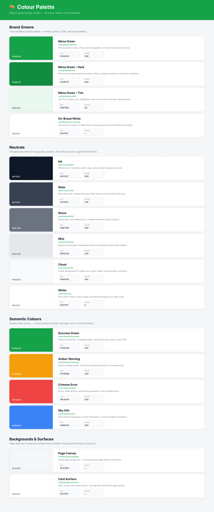
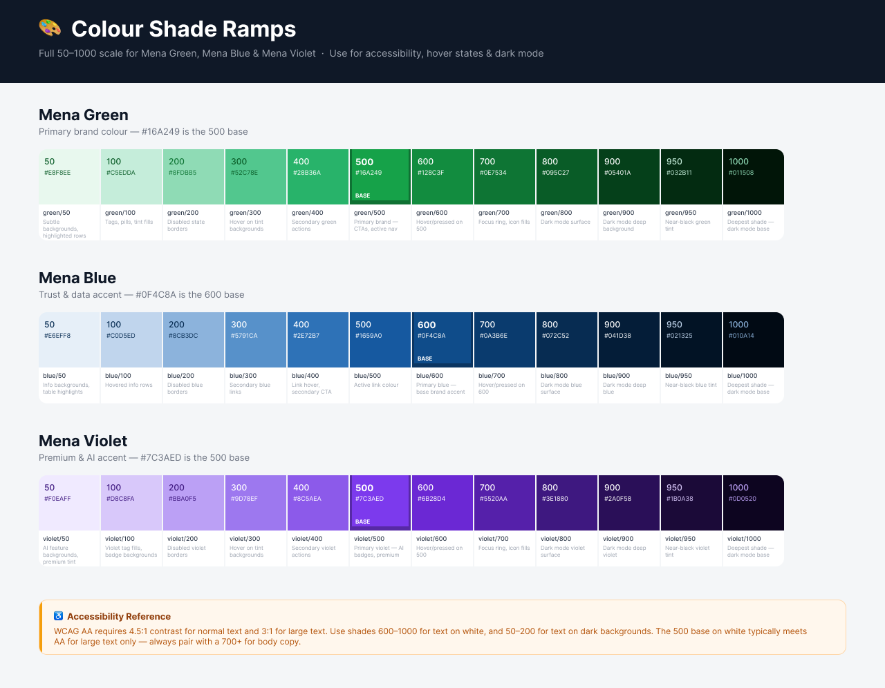
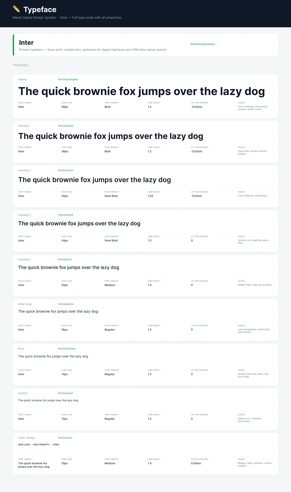
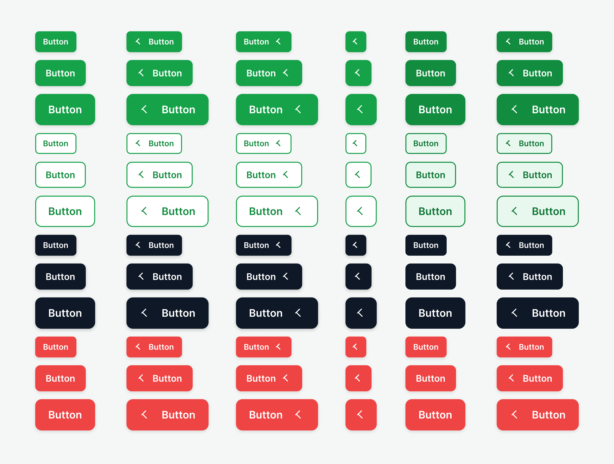
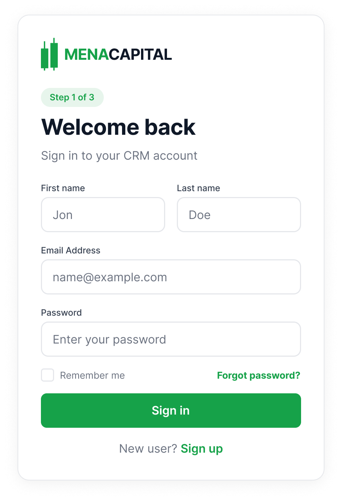
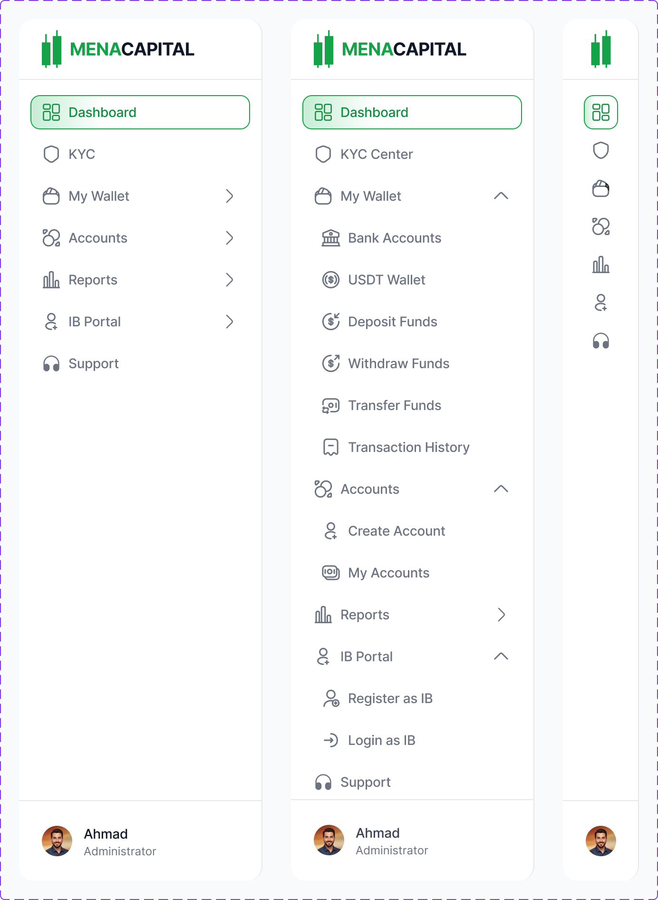
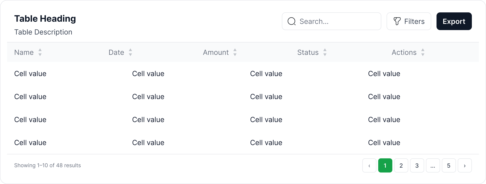

MENA Capital needed a full design system before a single screen could be built. I defined the token architecture, component library, and documentation framework that powers the entire product, collaborating with engineering to ensure every decision shipped cleanly to code.

Challenge
MENA Capital had a trading engine and regulatory approval, but zero design infrastructure. No component library, no token system, and no documentation for anyone to reference.
I didn't build the design system in a vacuum and hand it over. I started with the foundations — colours, typeface, spacing, button styles — and began designing product screens on top of them. As I finalised components for each screen, I contributed them back into the system. Cards, tables, sidebars, and form patterns all emerged from real product needs, not from a theoretical component checklist.
The system grew with the product. Every component exists because a screen needed it, not because a spreadsheet said so.
My Role
I owned the full design system end-to-end, from token architecture decisions through to component documentation and developer handoff. I worked closely with the engineering team to ensure naming conventions, token structure, and component APIs aligned with their tech stack.
Defined the naming framework, colour semantics, type scale, spacing, and radius tokens across 5 collections.
Built every component in Figma with auto layout, variants, properties, and interactive states.
Sat with developers to agree on token naming, component specs, and handoff structure so the system mapped directly to code.
Created in-Figma documentation pages for each system module so both designers and engineers had a single source of truth.

Semantic Design Tokens
I didn't start with a colour palette. I started with the decisions the colours needed to support: primary actions, semantic states, neutral hierarchy, and surface elevation. Each token was named for its purpose, not its appearance.
Decision
Semantic naming over descriptive naming
Instead of naming tokens by their visual properties (green-500, gray-200), I used a semantic framework: color/primary/default, color/semantic/success, color/neutral/700. This means engineers pick the right token based on intent, not by eyeballing hex values.
The system ships 4 brand greens (default, hover, tint, on-brand white), a 6-step neutral ramp from Ink (#0F1827) through to White, 4 semantic colours (success, warning, error, info), and 2 surface tokens for page canvas and card elevation. Every token includes a description of where and why to use it.

Typography
I chose Inter as the sole typeface. It's a variable font optimised for digital interfaces with excellent legibility at small sizes, which matters when you're designing data-dense trading screens. Every style in the type scale maps to a specific use case, documented directly alongside the specimen.
Decision
Single typeface, strict scale
Stakeholders asked about using a display typeface for marketing sections within the product. I kept Inter across everything. A trading platform needs trust and consistency. Every extra font is a decision someone has to make, and in a system with no design team to police it, constraint is the best governance.

Components
Every component in the library covers all interactive states: default, hover, pressed, focused, disabled, loading, and error. I built them using Figma's auto layout, component properties, and variants so designers can configure components without detaching.
The button system alone covers 5 types (primary, secondary, ghost, destructive, accent), 4 sizes (XS through LG), icon variants, full-width layouts, and paired button groups for common actions like confirm/cancel.
Decision
Destructive actions get their own colour, not just a label
Delete, remove, and cancel actions use a dedicated red button variant. I didn't rely on labels alone to communicate severity. In a financial product, accidentally triggering a destructive action has real consequences. The colour difference creates a visual speed bump.



Patterns & Templates
Beyond individual components, I built composable patterns that combine multiple components into reusable templates: authentication cards, sidebar navigation with expandable sections, data tables with sorting, filtering, and pagination, metric cards, status banners, and graph widgets.
These patterns give engineers and future designers a starting point for any new screen. Instead of composing from scratch every time, they assemble from tested, documented building blocks.
Login, registration, and verification flows in a single responsive component with language selection.
Collapsible sidebar with nested items, active states, and section grouping. Built as a component set with expanded/collapsed variants.
Modular table system: header cells, body cells, rows, toolbar with search/filters, and pagination. Assembles into any data view.
Metric cards, graph components, quick action panels, and status banners that snap together for any dashboard layout.
Documentation
Every module in the design system has its own documentation page in Figma with a consistent structure: a header describing the module's purpose, visual specimens of all variants and states, token references with hex values and shade numbers, and usage descriptions explaining when and where to use each option.
I built the documentation alongside the components, not after. This meant the engineering team could reference specs from day one, and there was never a gap between what was designed and what was documented.
The colour documentation page alone includes 16 documented tokens, each with their semantic name, hex value, shade number, and a plain-English description of when to use it.
AI in My Workflow
I used Claude connected directly to Figma via a bridge plugin to accelerate the repetitive parts of system building. AI handled token generation, swatch collection scaffolding, type scale creation, and component state multiplication, so I could focus on the design decisions that actually matter.
This isn't about replacing craft. It's about spending time on the decisions (why this colour, why this naming convention, why this component API) rather than the mechanical work of building 170+ token entries by hand.
Approach
AI for execution, human for decisions
I made every design decision: the colour semantics, the naming framework, the component architecture. Claude executed them at speed, generating consistent token sets, scaffolding component variants, and validating accessibility contrast ratios across the palette.
Outcome
The design system didn't just organise tokens and components — it changed how fast the team shipped. New screens went from concept to dev-ready 3x faster because every layout, colour, and component decision was already made. Engineers stopped asking "which green?" or "what padding?" — the system answered for them.
New screens that used to take days were assembled in hours. Tokens and components eliminated repetitive design decisions.
Semantic naming and in-Figma documentation meant engineers picked the right tokens without asking. No Slack threads, no spec clarifications.
Every screen built from the system looks and behaves the same — without a design team policing consistency.
Developers referenced component specs independently, freeing up design time for product decisions instead of handoff support.